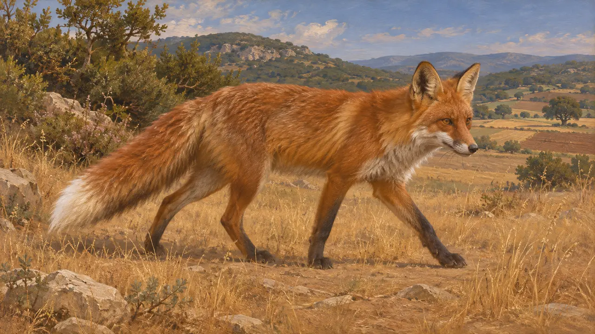
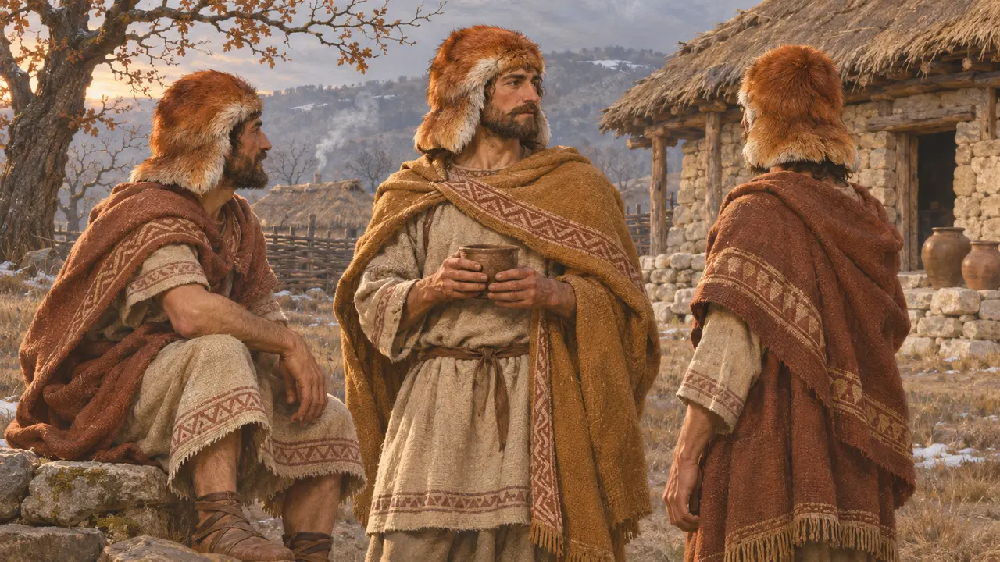
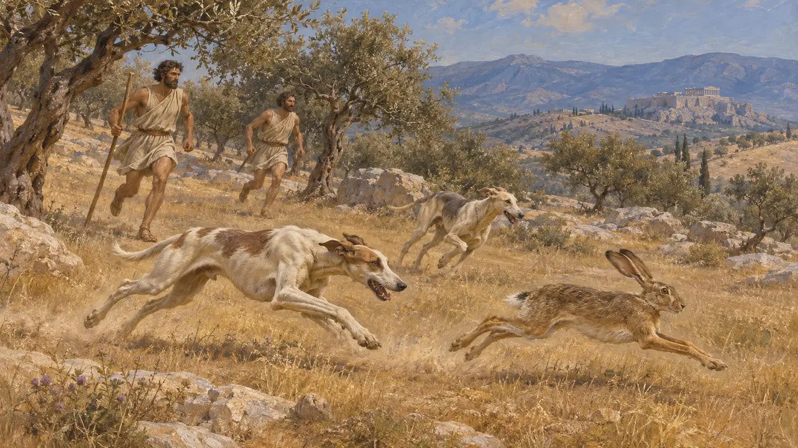
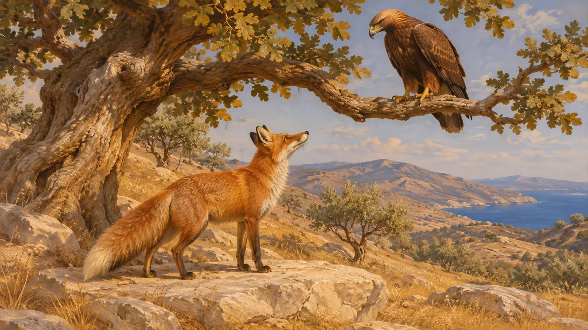

Enzyklopädie › Tierwelt und Wetter

Der Fuchs
Der Rotfuchs in Anatolien, Thrakien und Griechenland, 6. bis 5. Jahrhundert v. Chr.
Im Spiel: Level 3: Die Lüge, Level 6: Die Schiffbrücke, Level 7: Sardes brennt, Level 8: Die Bucht von Marathon, Level 9: Der Kanal, Level 10: Die Heißen Tore, Level 11: Das Finale
Der Rotfuchs lebte in weiten Teilen der Länder, welche die persischen Heere durchquerten, von Lydien und Thrakien bis Griechenland. In den persischen Königstexten hat er kaum Spuren hinterlassen. Griechische Autoren erwähnen ihn in Fabeln und, am aufschlussreichsten, in den Fuchsfellmützen thrakischer Soldaten.
Im Spiel: Das Spiel zeigt in den Levels Athos, Bagastana, Istros, Marathon, Plataiai, Sardes und Thermopylen Füchse als Kulisse. Keine Regel wertet sie aus.

Ein häufiges Tier des offenen Landes
UmstrittenKeine Quelle aus dieser Zeit beschreibt das Verbreitungsgebiet des Fuchses. Der Rotfuchs ist heute in ganz Europa und Westasien verbreitet und lebt in Wäldern, Gebüsch, Ackerland und Steppe. Moderne Zoologen nehmen für das 5. Jahrhundert eine ähnliche Verbreitung an, doch das ist ein Schluss vom lebenden Tier und keine Angabe aus einer antiken Zählung.
No ancient source gives the range; inference from modern zoology

Fuchsfellmützen der Thraker
Antiker BerichtHerodot beschreibt die Thraker Asiens im Heer des Xerxes mit Mützen aus Fuchsfell. Xenophon, der einige Jahrzehnte später schreibt, berichtet, die Thraker hätten Fuchsfellmützen getragen, die die Ohren vor der Kälte schützten. Beide zeigen, dass Fuchspelze in Thrakien ein gewöhnliches Material für Kleidung waren.
Herodotus 7.75; Xenophon, Anabasis 7.4.4

Der Fuchs in der griechischen Jagdliteratur
Antiker BerichtXenophons Abhandlung über die Jagd, im 4. Jahrhundert geschrieben, zeigt die griechische Jagdpraxis kurz nach den Perserkriegen, mit dem Hasen als Hauptwild. Sie belegt nicht, dass der persische Hof Füchse jagte, und die königlichen Jagdparks der Zeit werden meist mit größerem Wild verbunden.
Xenophon, Cynegeticus

Der Fuchs in der Fabel
Spätere LegendeDer Fuchs wurde zur listigen Gestalt der griechischen Fabel. Der Dichter Archilochos verwendete im 7. Jahrhundert v. Chr. bereits Erzählungen von Fuchs und Adler. Herodot nennt Äsop als Fabeldichter, der auf Samos Sklave gewesen war. Die unter Äsops Namen gesammelten Fabeln wurden erst viel später niedergeschrieben, sie zeigen also griechische Erzählkunst und nicht das wirkliche Verhalten des Tieres.
Archilochus, fragments; Herodotus 2.134
Quellen
- Herodotus 7.75
- Xenophon, Anabasis 7.4.4
- Xenophon, Cynegeticus
- Herodotus 2.134
- Archilochus, fragments